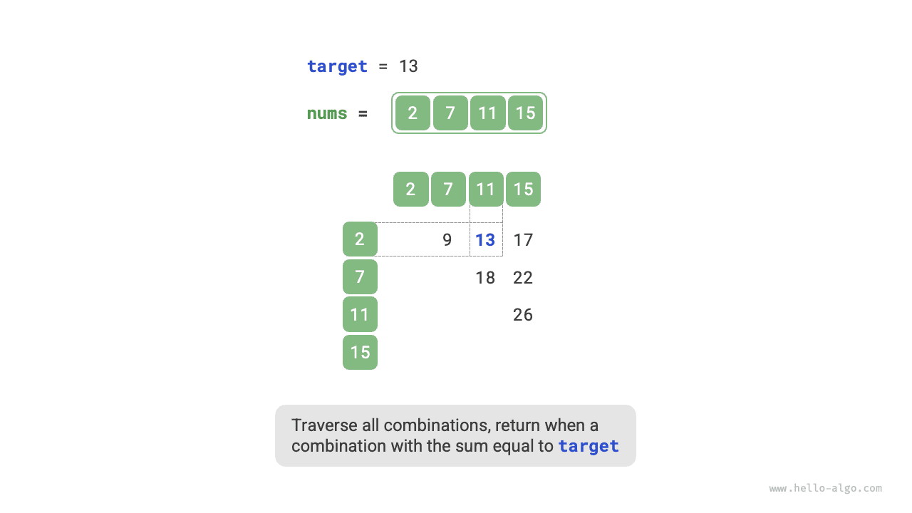

البحث
استراتيجية التحسين بالتجزئة
في مسائل الخوارزميات، كثيراً ما نقلل التعقيد الزمني للخوارزميات عبر استبدال البحث الخطي بالبحث القائم على التجزئة. ولنستخدم إحدى مسائل الخوارزميات لتعميق فهمنا.
بمعطى مصفوفة أعداد صحيحة nums وقيمة مستهدفة target، ابحث عن عنصرين في المصفوفة يكون مجموعهما target، ثم أعد فهرسيهما. تكفي أي إجابة.
البحث الخطي: مقايضة الزمن بالمكان
فكّر في اجتياز جميع التركيبات الممكنة مباشرة. وكما هو موضح في الشكل أدناه، نستخدم حلقات متداخلة ونتحقق في كل تكرار مما إذا كان مجموع عددين صحيحين يساوي target. فإن كان كذلك، نعيد فهرسيهما.

الكود موضح أدناه:
Go
/* الطريقة 1: التعداد بالقوة الغاشمة */
func twoSumBruteForce(nums []int, target int) []int {
size := len(nums)
// حلقتان متداخلتان، التعقيد الزمني هو O(n^2)
for i := 0; i < size-1; i++ {
for j := i + 1; j < size; j++ {
if nums[i]+nums[j] == target {
return []int{i, j}
}
}
}
return nil
}
TypeScript
/* الطريقة 1: التعداد بالقوة الغاشمة */
function twoSumBruteForce(nums: number[], target: number): number[] {
const n = nums.length;
// حلقتان متداخلتان، التعقيد الزمني هو O(n^2)
for (let i = 0; i < n; i++) {
for (let j = i + 1; j < n; j++) {
if (nums[i] + nums[j] === target) {
return [i, j];
}
}
}
return [];
}
التعقيد الزمني لهذه الطريقة هو $O(n^2)$ والتعقيد المكاني هو $O(1)$، مما يجعلها مستهلكة للوقت للغاية عند المدخلات الكبيرة.
البحث القائم على التجزئة: مقايضة المكان بالزمن
فكّر في استخدام جدول تجزئة تكون مفاتيحه عناصر المصفوفة وقيمه فهارسها. اجتز المصفوفة ونفّذ الخطوات الموضحة في الشكل أدناه في كل تكرار:
- تحقق مما إذا كان العدد
target - nums[i]موجوداً في جدول التجزئة. فإن كان موجوداً، أعد فوريًا فهرسي هذين العنصرين. - أضف زوج المفتاح والقيمة المكوّن من
nums[i]والفهرسiإلى جدول التجزئة.
التنفيذ موضح أدناه ولا يتطلب سوى حلقة واحدة:
Go
/* الطريقة 2: جدول تجزئة مساعد */
func twoSumHashTable(nums []int, target int) []int {
// جدول تجزئة مساعد، التعقيد المكاني هو O(n)
hashTable := map[int]int{}
// حلقة واحدة، التعقيد الزمني هو O(n)
for idx, val := range nums {
if preIdx, ok := hashTable[target-val]; ok {
return []int{preIdx, idx}
}
hashTable[val] = idx
}
return nil
}
TypeScript
/* الطريقة 2: جدول تجزئة مساعد */
function twoSumHashTable(nums: number[], target: number): number[] {
// جدول تجزئة مساعد، التعقيد المكاني هو O(n)
let m: Map<number, number> = new Map();
// حلقة واحدة، التعقيد الزمني هو O(n)
for (let i = 0; i < nums.length; i++) {
let index = m.get(target - nums[i]);
if (index !== undefined) {
return [index, i];
} else {
m.set(nums[i], i);
}
}
return [];
}
تقلل هذه الطريقة التعقيد الزمني من $O(n^2)$ إلى $O(n)$ عبر البحث القائم على التجزئة، مما يحسّن كفاءة زمن التشغيل تحسيناً كبيراً.
وبما أنه يلزم الاحتفاظ بجدول تجزئة إضافي، فإن التعقيد المكاني هو $O(n)$. ومع ذلك، تقدم هذه الطريقة مقايضة زمنية-مكانية إجمالية أكثر توازناً، مما يجعلها الحل الأمثل لهذه المسألة.